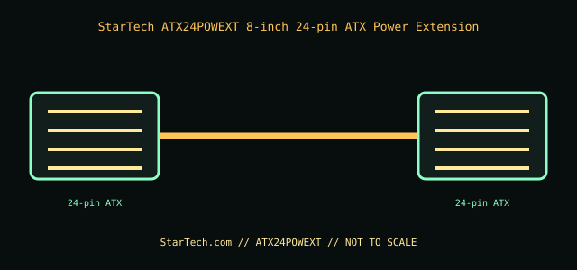

[ INTERNAL PC POWER CABLE // MODEL-SPECIFIC RECORD ]
StarTech ATX24POWEXT 8-inch 24-pin ATX Power Extension
StarTech.com manufacturer part ATX24POWEXT. This record documents only this specified cable assembly; connector fit is not evidence of a matching pinout or PSU compatibility.

PSU SAFETY: Modular PSU-side cable pinouts are proprietary and model-family-specific. Never substitute a modular cable by brand, connector fit, color, or appearance; use only the exact PSU maker-approved cable for the exact PSU model and revision.
Manufacturer specifications
| Manufacturer part | StarTech.com ATX24POWEXT |
|---|---|
| Connector / pin count | One 24-position ATX male connector to one 24-position ATX female connector (24-pin, 2-row). |
| Wire gauge / length | 18 AWG; 8 in (203.2 mm). |
| Compatible PSU family | Standard 24-pin ATX PSU output from the PSU’s original motherboard lead. On a modular PSU, this extension attaches only to the PSU manufacturer’s approved 24-pin cable at its motherboard end; it does not connect directly to a modular PSU port and is not an interchangeable replacement cable. |
Power and safety caveats
An extension does not change the PSU pinout or increase its output rating. Keep the original 24-pin lead and PSU within their ratings; inspect for incomplete seating, heat discoloration, damaged latches, or pin damage before operation.
Case clearance and routing
The cable body is 8 in long. Measure the complete route plus the original lead, connector turns, cable-management channel, and side-panel space; do not kink or pinch the bundle under the motherboard tray or case panel.
Manufacturer specifications and manuals
- StarTech.com — ATX24POWEXT product pageManufacturer part identity, ATX 2.01 extension purpose, and product information.
- StarTech.com — ATX24POWEXT datasheet (PDF)Manufacturer technical sheet for length, 24-pin connectors, and 18 AWG construction.
Use current manufacturer documentation for exact model revisions and installation. This archive illustration is a connector-identification schematic, not an electrical pinout.